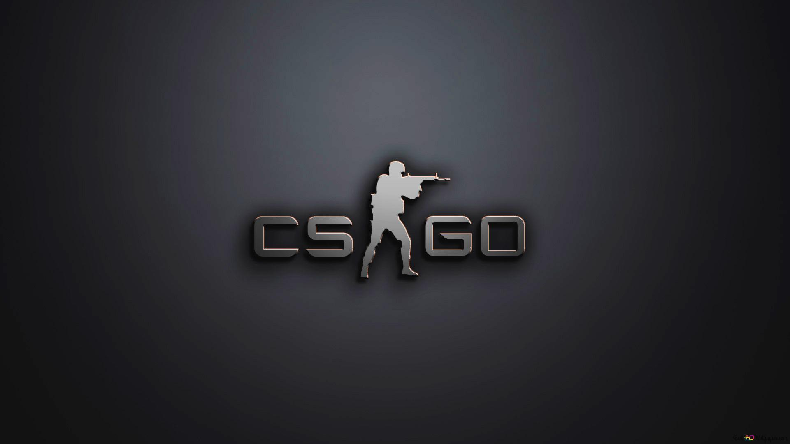
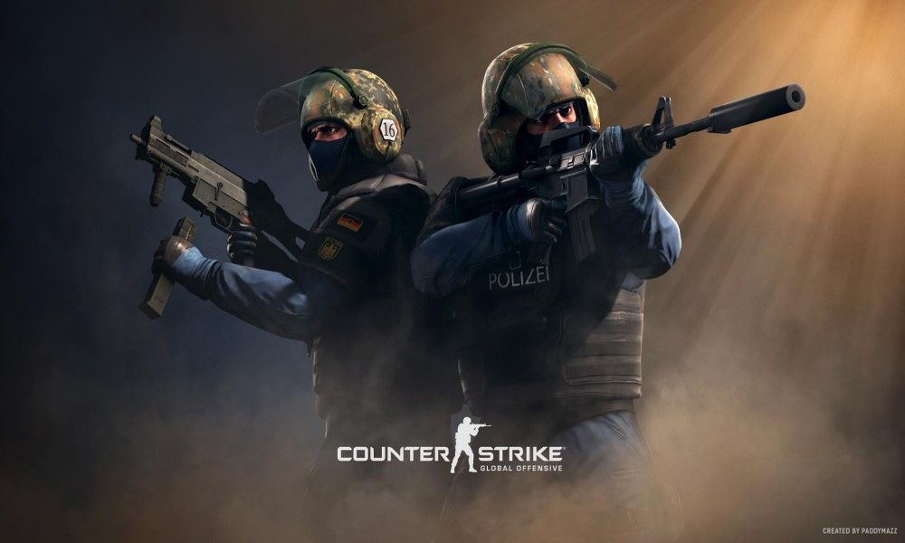
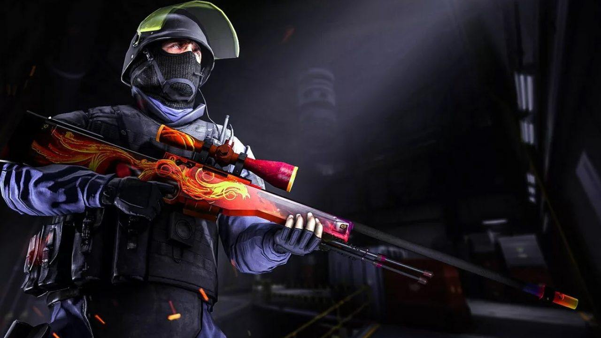
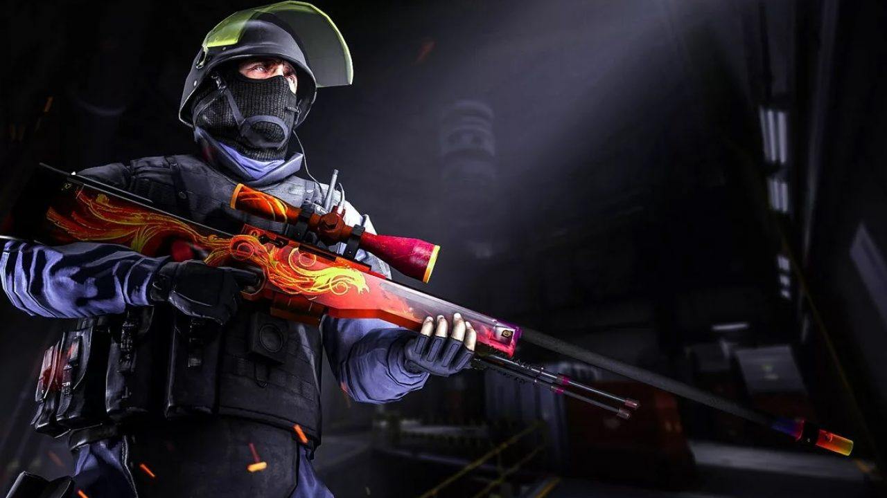
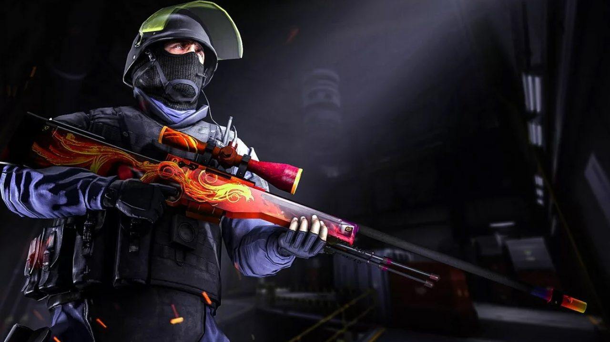

 


Counter-Strike (também abreviado por CS) é um popular jogo eletrônico de tiro em primeira pessoa. Inicialmente criado como um "mod" de Half-Life para jogos online, foi desenvolvido por Minh Le e Jess Cliffe e depois adquirido pela Valve Corporation. Foi lançado em 1999, porém em 2000 ele começou a ser comercializado oficialmente, e posteriormente foram feitas versões para Xbox, Mac OS X e Linux. Atualmente o jogo é jogado na versão Counter-Strike: Global Offensive.